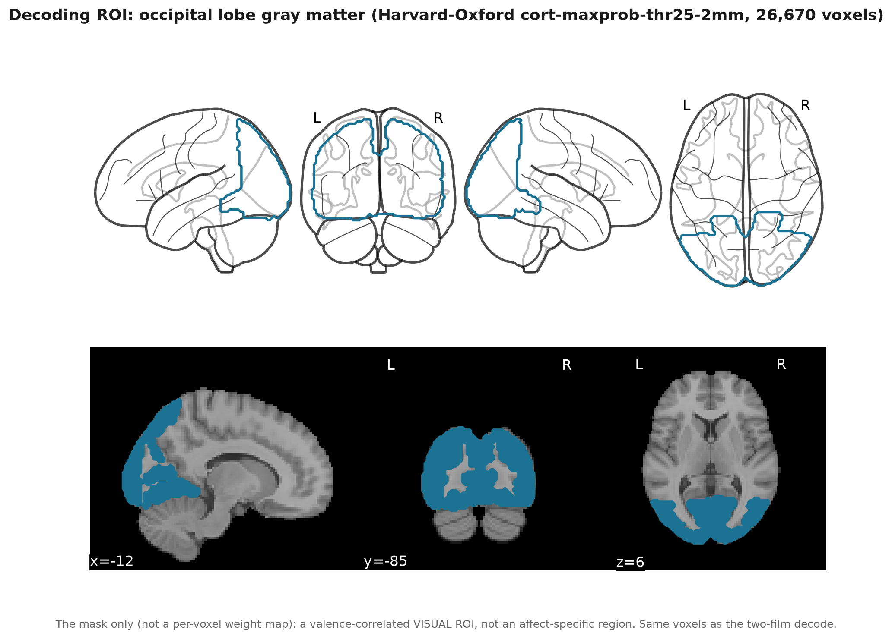

Methods
Two arms share the same human continuous targets. Significance is withheld; we report effect sizes gated by positive controls and circular-shift nulls.
Text arm
- Dialogue from official subtitles or Whisper; contamination filters (songs, credits, verse).
- Per-segment BERT (and robustness models) and Gemini valence → 1 Hz, NaN when silent.
- Optional ±3-segment context condition (four films).
- Agreement: Pearson r vs human items; multi-film pool with film as bootstrap block.
- Extended to all 50 GRID + discrete + bodily items.
Brain arm
- Subjects: five lowest-motion runs per film (pre-specified by FD), Payload & Tears of Steel.
- Estimator: Ridge (α = 10 000), leave-one-subject-out; within-fold Pearson as legacy single-subject metric.
- Gate 1: planted-signal positive control (~100 s valence timescale).
- Gate 2: real mean must clear its own circular-shift null by >1 null SD.
- Masks: occipital (y < −60 mm); affective network = insula ∪ vmPFC ∪ amygdala (Harvard–Oxford).
- Visual residualization: remove low-level visual set from the target (leak-free w.r.t. BOLD).

Physio & audio
- BIDS physio 1000 Hz (PPG → HR, EDA, RESP) aligned to film onset; subject-mean series vs annotations.
- Audio 1 Hz features (RMS, centroid, ZCR, …) for Tears of Steel (CC Blender film); truncated to annotation length (588 s).
Reporting policy
Continuous film annotations are strongly autocorrelated (median 1/e lag often 30–55 s on short films).
Block bootstrap at the second scale is too liberal; we therefore report effect sizes,
film-block CIs for text, and shift-null comparisons for brain — not NHST stars.